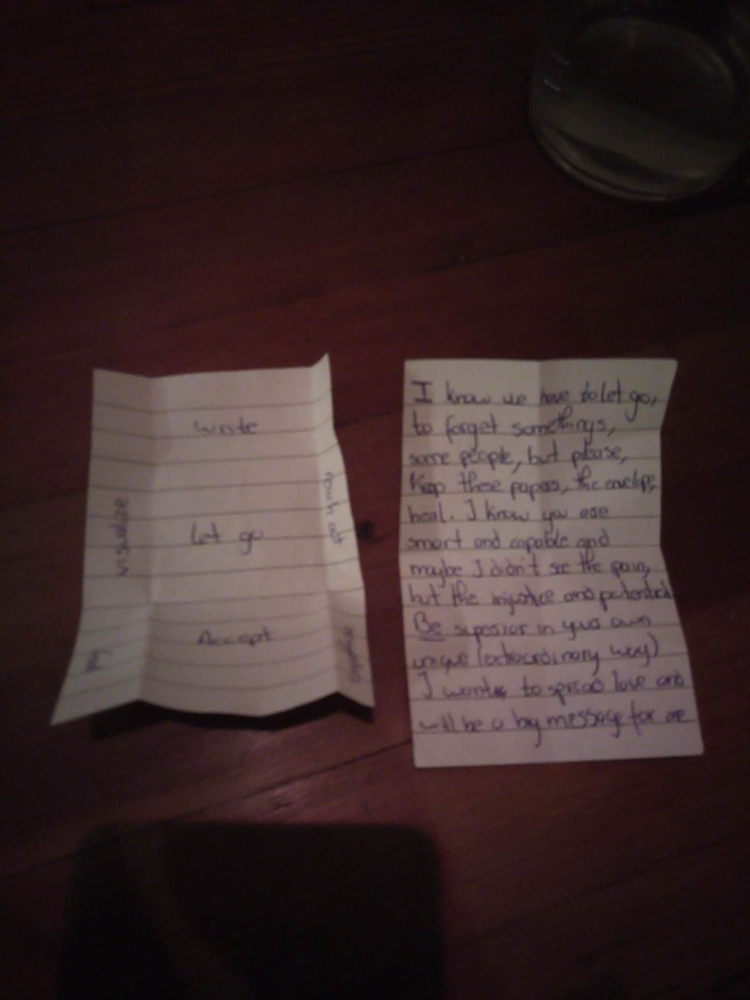
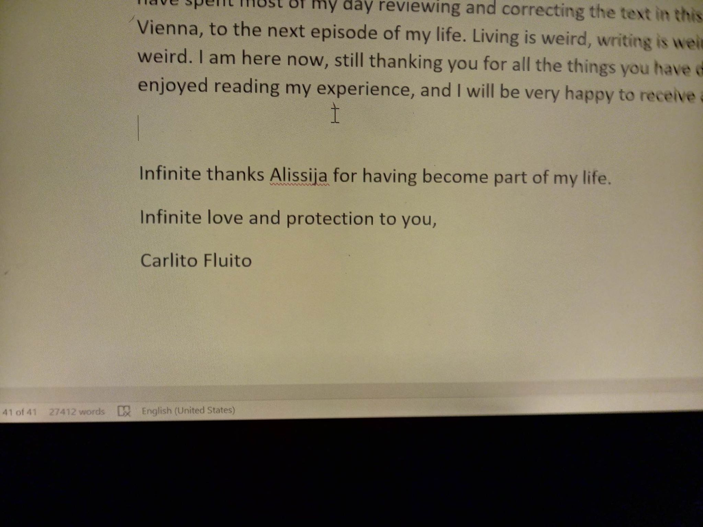
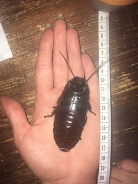
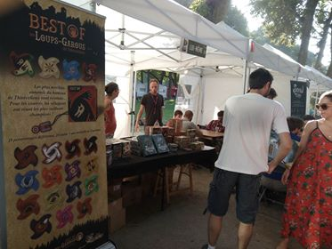
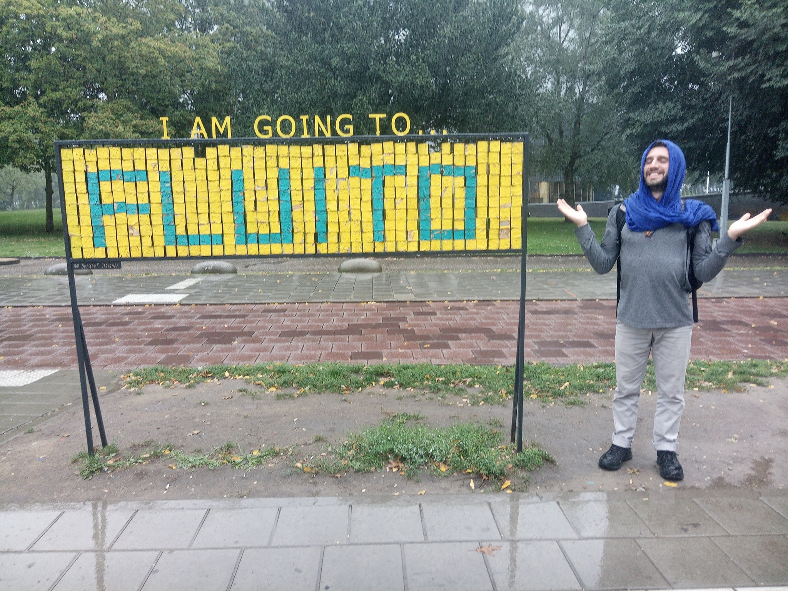
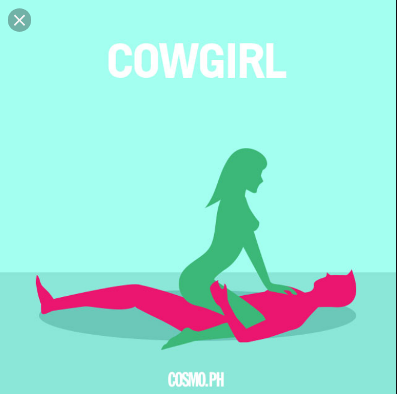
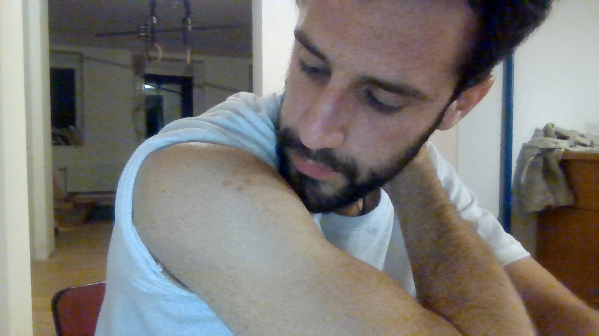

2 BOOK II - Distance
This is the evolution of our relationship during our time apart. Here there are some of our messages exchanged through Facebook together with some of my inner processes along this period. O I never send it to you. Until now.
Preamble
I was raising downwards.
You were gestating inside my mind.
A sheep in lion’s clothing venturing into the den of a lion in sheep’s clothing.
2.1 Silence (2019-08-05 to 2019-09-07)
2.1.1 The letter (2019-08-05 to 2019-08-13)
I was in Brussels. I wasn’t worrying much about you, since I knew you would get away of pretty much any situation, but I was curious about what had happened.
— The night was great.
How was your travel?
— Sleeping a lot, like what I am doing today.
Planning to write something to you soon.
How the night developed?
Anecdote?— The kind guy found me and brought me to his place, woke up Maritrini, she was quite unhappy.
The night developed good. 😁
Right after you left, I got high.
Ate a vegetarian tortilla in the morning.
Got some insightful thoughts on detachment of one’s own feelings.
I didn’t fully get what you meant by “kind guy” or the rest of the anecdote until three months later, when, considering the new situation, by chance I asked the “kind guy” about you. Anyways, I was pleased you kept communicating and being honest with me.
— Wonderful. I have trust on you and your resources.
You won’t fall from the tree; you’ll be okay surviving one random night on Strasbourg. 🙂
Remember that you have my help (no matter it’s quality) if you feel low. I’ll write to put some of my thoughts in order and share them with you (don’t expect the most elaborated text…).
I send you some love. ❤️
— 🥰 😘
That same night I texted you.

— This one is yours?
Also, share your pics on the album, please
The more personal ones, you can share them by email or Dropbox/whatever
Thanks!!!
I kept on writing your letter. The next day (2019-08-06) I messaged you:
— I hope you have some free time to read my thoughts
Your email address?
The more personal ones, you can share them by email or Dropbox/whatever
Thanks!!!
You wrote your email address.
— The notes are not mine, I believe those are from Ines
I will manage the pictures and everything else in few days, I need some sleep 😀
And the next day (2019-08-07):
— I am pretty done with the writing.
I don’t know if you are planning to write or share your writing with me.
In case you do, I wouldn’t like to interfere your memory and interpretation of the experience with my words and thoughts
In case you don’t plane to write and share anything with me, I can send you my text
— I would like to read it, I have my notes, don’t worry 😊
I was advancing with the text. It was long, but worthwhile (2019-08-11)
— Almost finished 💪 💪 💪
40 pages…
Read them slowly.
— Oh wow
— Also, I’m thinking about visiting Estonia.
It could be cool to see your face on cinema. But don’t feel obliged.
If you don’t want my visit, let me know.
And in case of going, it could be nice to stay at your place (Tallinn or otherwise)
 27.500 words
Voilà, it’s on your mail
Enjoy it
Two days of silence. It was 2019-08-13. I wasn’t worrying much. I was in Vienna with a friend. I had sent you forty pages of letter to read. That take time to answer. You made an appearance.
— I’ve read 2 chapters and wow how little u know/understand/understood me.. that’s so interesting. I decided to read one chapter a day to lengthen the joy of sweet memories 😃

— I think I’d be happy to see you here, I won’t be able to host you tho in Tallinn cuz I’m giving the room away in the end of August and I don’t know how busy I’ll be with all the school and movie shit so I can’t be sure how much time I could chill with you but if u are coming anyways I’ll be happy to see you
You comment about my lack of understanding hurt and confused me a bit. Anyways, you seemed happy with the letter. That was enough for me.
— It will help understanding you, if you share your notes/ thoughts 🙂
About going, it can be helpful to know your plans and visit when you are more free
Then, silence.
2.1.2 Speaking with K. around Europe (2019-08-14 to 2019-09-03)
My days were busy. I was satisfied because I had been able to finish the letter. I was enjoying myself in Vienna with my friend. Well, kinda. Actually, I was continuously comparing how intense and alive I have felt being with you; how smart, wise and knowledgeable you were; how much you have challenged me; and how little of that my friend was giving to me.
The trip was planned so I would visit Ljubljana (Slovenia), and then Trieste (Croatia). Therefore, I would keep myself busy spending time with my friends while you were reading my text. Hopefully, you would answer with your words at some point. I wasn’t expecting a long letter like mine since I was already used to it. Many of my past letters to other friends have been left unanswered. Specially the long ones. But anyways, I was eager to hear from you, to know your feedback.
I talked with K., your best friend, a few days later (2019-08-17). I asked her for the pictures of the exchange. Two days later (2019-08-19) just when I arrived back to Brussels from Croatia, I found K.’s message. Without any warm up, she hit back.
— What is the meaning of life?
— A bit of a difficult question for FB chat
Why do you ask?
Btw, I’m fan of writing letters, if you write me one with the question and context, I can write my answer
After 3 days of K.’s silence (2019-08-22), I sent her the link of my “Meaning of life” video from YouTube. She just reacted to the message with a thumb up.
— How are your existential questions going?
— Perfect
She wasn’t specially talkative.
— Great
Are you posting the pictures in the folder?
K. became silent as well. She wasn’t uploading the pictures to the folder either. I wanted to see ourselves kissing during the last day. I wanted to refresh my memory with the images of the exchange. I wanted to conserve the pictures for the future. But it wasn’t happening.
I was in Brussels, feeling lonely from time to time, like always. Anyways, I didn’t want to show myself vulnerable, or to needy or demanding for you. I was waiting for your answer, which wasn’t arriving. However, nine days after your last message (2019-08-22), I thought I had been waiting enough and I decided to text you.
— How are you doing?
But nothing happened.
12 days of silence (2019-08-25). I sent you a picture of a picture of a Werewolf stand in a boardgames fair in Brussels. It was a bait. I tried to start talking again with you, and check that you were alive. But you didn’t bite it.

I was deeply confused. I had sent you my whole mind and consciousness with those forty pages and I was receiving a totally inscrutable silence. I was deeply unsure about how you had taken it. I was worrying whether it had been a good idea to send it or not. It had happened on the past, that I had opened myself up to some people and they had been scared by it. But with yourself, it had been different. That is why I felt confident about it. But then, silence?
I was lost about what that silence meant. Were you busy? Were you writing back? Had I said something I wasn’t suppose to say? I didn’t want to come across as needy or pushy. I knew that you needed you own space, that you were special, that you could turn non-communicative and that you were in a busy period.
The days of your silence had been quite good for me. I had been in Vienna, Slovenia, and Croatia visiting friends and occupying my days with sightseeing, new people, nature, hiking, mountain, and beach. I had talked with excitement about you with my friends. They had recognized that the whole thing was weird. But they saw me happy and lively, so why shouldn’t I invest in the relationship? However, little by little, Brussels was imposing its reality, and life wasn’t that interesting anymore. Loneliness was coming back. Days were feeling long and empty, and despite the good weather, many times there was no one to out with.
During those days, I hang out with some teenagers that I had randomly meet one night. One of my friends was busy preparing exams, another was travelling, and a young guy I started meeting was nice, but not intellectually stimulating. After your appearance in my life, there wasn’t anyone as interesting as you.
At least, I had a conference in Poland (2019-08-29 to 2019-09-03) about Psychology of Religion that kept my mind busy and my social needs satisfied for some days. However, I had a strong outburst of loneliness during the last day of the conference. the whole academia world seemed very unreal to me compared with the rawness we have lived in France. I missed that authenticity that I couldn’t find among scholars. I felt disconnected from my colleagues. I felt disconnected with the rest of researchers and academics. After my presentation, the nervousness of preparing my talk gone. The emotional opponent process wasn’t relief, though. It was emptiness. And I fill that emptiness with feelings of disconnection from everyone. I wasn’t sure why I was there. You were in my mind, and it had been already 21 days of silence. I was completely puzzled. I had been thinking about you, struggling to control myself and not texting you. But that day, I couldn’t. I texted you. I tried again.
— A.
Can you send me the pics of the exchange, please?
And I would like to know if everything is fine
What in your mind and all that
The messages appeared as read, but they remained unanswered. Some of my friends were already recommending me to be over you. You had ghosted me. You had flaked on me. I just had to accept that you were over. Probably you had read something from my letter that you hadn’t like. Well, it happened again. I never learnt how to keep playing the rules of the game. “Don’t disclose all the information at once. Don’t give away all your power.” I thought that with you it could be different, that I could be myself, that I could be open and honest. And there they were the results.
Full silence.
2.1.3 Requesting divine interventions (2019-09-04 to 2019-09-07)
One day later (2019-09-04), I decided to text K.. It wasn’t the smartest, but I didn’t have a clue about you. My mind was going to multiple places, to numerous possibilities. I didn’t want to buy the version where you have just completely forgotten about me. I wanted to considered alternative scenarios. In the worst of the cases, you might be simply dead, or in the hospital, and I was waiting for your answer that would never arrived. I wanted to cleap up, at least, the worst of the doubts.
— How are you?
— Perfect!!! How are you??
— I’m in Eindhoven now
After a week in Gdansk
In a conference of psychology of religion
— And how’s going?
— Pretty well
I’m a bit stranged that Alissija stopped answering my messages
She remained silent. I guess I fucked up by bringing up the topic too soon. But she wasn’t very talkative, and I had already asked about how she was…
Next day (2019-09-05), I sent her a photo that was left unanswered as well.  Well, I have just played myself. Two non-answering people more in my life. But I didn’t give up so easily and next day, I tried again:
— Karolina stopped answered as well?
— I didn’t like the fact, that you wrote me just to ask about Alissija.
Ouch! Fully caught… However, she was talking. She was answering. I had to be smoother this time.— I am always welcome to know about how your life is going
I told you as well my willingness to write letters so we can share each other’s experiences
If you got offended because of that, I hope you can forgive me
She texted me a sort of letter:
— My dear Carlito Burlito,
It’s a big pleasure for me to be connected with person like you. Time we spent together was one of the most interesting moments in my life. Thank you for making me laugh :-)
Right now, I’m trying to figure out what would I like to study in future. For one moment I even wanted to study medicine.
What about your life? Why you decided to study psychology?
With best wishes and kisses
Your K.
Well, that was the best I could get for the moment.
— How long do you want the answer?
— The same as I wrote you :-)
That was a challenge, since my letters averaged four pages in a word file at that period of my life. But I tried:
— My dear Karolina,
I also learned lots from you and our conversation. Thanks for keeping me humble and reminding me that my worldviews are very limited.
What are the options you are thinking about? Medicine is a great career. If you finally choose it, apart from helping human beings and saving lives, you’ll discover the intricacies of the human body functioning, which I also find compelling.
About my life, as I mentioned, all is good, but the realization that the person that I thought I could open up and trust on now stopped communicating with me without any explanation is quite disturbing and hurtful. What would you do if something like this happens to you? I chose psychology because I wanted to understand human beings, I wanted to know why we are as we are, and 9 years later, although I have partially solved many of my doubts, human beings keep on surprising me and catch me unprepared in many occasions.
Always learning.
Love and peace,
CF
— Bit longer, sorry
Of course, it hurt. How was it not supposed to hurt when the person you trust, the person that supposedly love you and the one that you love stopped communicating for almost a month without any explanation after you shared your whole being with her? Really, that wasn’t supposed to hurt? But, the situation changed. My message worked wonders. Just 5 hours later, and A. broke 25 days of silence. K’s divine intervention had worked.
— Thanks K.
2.2 Magnetism (2019-09-08 to 2019-)
2.2.1 Intermittences (2019-09-08 to 2019-09-22)
You, A., broke your silence with a sort of letter, much in the way K. had done it.
— Hi dear,
Unfortunately the pictures are not in my reach at the moment.
Everything is as life is, you know 😀 So it’s interesting…
The school started, the homework started. I’m glad it’s giving me these small goals to achieve. So I’m almost not overthinking. Just in the evenings. But also my overthinking is useful here. And all the other ‘’defects’’ as they are usually seen are welcome here (at least I put them this way) so I feel like I’m in the right place.
I still do not have Wi-Fi (for two more days, I’ll get it on Tuesday) So don’t be too sad that I’m not answering.
And how are you, dear Carlos?
— Thanks for the message. I’m still dependent on human beings.
Text you later
And thanks Karolina for her divine intervention
So, that was it. You haven’t had internet in all this time. Your message was warm and sort of hopeful and positive. I was happy about how you were feeling like you were in the right place. I was somehow envy of you, since I was craving more artistic environments, and you were starting your studies of theater.
I was relieved by your words, but I still remembered how much you had made me wait. Thus, I took two days to answer you back (2019-09-10). A picture of a kid grabbing a huge bug was very much a reminder of you. However, that day I didn’t pay attention to that octopus tentacle…
 Many things were going on in my life during the beginning of September2
Many things were going on in my life during the beginning of September2
— I would write you a letter about my mind/development, but I don’t want you to feel force to write or overwhelm with my stuff
I can also briefly tell you that all is fine
And about you in the school, enjoy and grow
As you said “defects” are inspiration
and if your mind starts bullying you and you want to talk / write to someone
I listen
These ones if you get bored
I sent you some pictures of animals that I thought you would like, since the pics were very well done and the animals were quite weird. Considering how much you enjoyed doing pics to dead bees, and observing bugs, it could surely be a good thing for you.
Ironically, K. answered me to my last question about “What would you do if the person you trusted stop talking to you?”
— Good evening.
Thank you for writing me back and for waiting my answer.
About the person who stopped talk to you. Maybe this person is really busy, or “she” doesn’t ready to talk right now. Actually, I’m at the same position as you right now. One man who I felt in love with just stopped talk to me. But I probably understand why. So, we both, me and you, should learn something from this situation.
Right now, I feel a little bit pain, but I realized that I can use it to create music. And when I look at the young girls, I don’t want them to feel this pain I did. But somehow it changed me, so I don’t know now, if it’s good or not.
Hug you very tight ❤️
And wish you a good night!
Two days later (2019-09-12), which I understood as an okay time for answering, you wrote back:
— Oh here I am afraid I have no time at all to be bored. You can write me a letter if you wish to share, I will not feel forced to reply right away, besides I believe you understand the business of shit I’m dealing with in this school now 😀
Oh btw do you know to recommend me some theater schools in Spain (knowing my interests briefly) where I could go for a semester?
— Remind me your interests
I know more about dance than theater, but I have some friends that have done acting/directing
The day after (2019-09-13), I felt deepy misserable. I had been overusing my phone, it was Friday
Meanwhile, I was talking with K. Our relationship seemed to be warmer. who had posted on Facebook a quite insinuating thought. I felt motivated enough to write her a proper letter
Letter to K. (2019-09-16)
Louvain La Neuve, Belgium
Hello K.,
I am not used to quick, short letters written under pressure. I prefer long ones with the possibility of spending weeks without answering. To strengthen my patience, the receiver’s patience, and adapt to the unexpected evolution of life. Instant communication is just to give messages about how everything is going well, asking for emotional or practical support in moments of need, or arranging and organizing meetings. That is my view. Although, I understand that it is not really accepted. Other’s people problem.
Actually, I don’t have a smartphone anymore. I am using an old phone with keys and all that. My life has gotten so much better just with this change. If I miss my smartphone, I will consider coming back to it, but I am really pro old phones. At least, I have a strong excuse to be isolated without feeling lonely and recognizing who are the people that really care for me (those that call and send SMS).
About A., “the person that stopped talked with me” (funny that reminds me to Voldemort’s nickname: “he who must not be named”). As I mentioned in the previous paragraph, instant messaging is to check that everything is going fine. I am way less empathetic than you, so, if I send a long text talking my mind and then I received three weeks of silence, it is a lot of time to make theories in many directions. A friend also told me the hypothesis of “It is nothing about you” a.k.a. “She is busy”, “Her cat died”, “She lost the phone”, whatever. Anyway, for this, I think like Nietzsche
“He who has a why finds a how”.
In the hyperconnected world that we inhabit, it is always possible to let other people know that we are alive. And I have to admit that I am pretty bad at that since my mother used to complain about this on the past. Now, she accepted and understood that I am usually fine, that I like to do risky things, that I may or may not be at Brussels at a given point, and that I usually appear in Spain with maximum one-week notice. It started to happen when I was living in Barcelona (at 20 years old) and I was mentioning my trips around Europe with one day of advance, or when I was already in a foreign country, like a spontaneous trip I did to Germany. Thus, I developed a really familiar feeling with travelling around. My mother is fine with knowing about me sporadically or following my social media and knowing that I am alive. I am not saying that is good or bad, but people get used to everything.
In the case of A., well, I was worrying. Once, she answered, I could understand better that she is having a busy period and that whatever she experiences there (at the school), she will share it with me if she wants.
About you and your “man in the same situation”, life sucks. Well, people suck. Life is fine. If you understand why that guy stopped talking with you, that is fine. Good for you. If you don’t, ask. If he doesn’t answer, people suck. But I have noticed that girls have a stronger conditioning to not taking initiative in many situations, from the first kiss to the first message. Go over it; expose yourself; become vulnerable and change the rules of the game. If it doesn’t work, at least you tried. I don’t want to imagine the amount of suffering that so many girls have caused to themselves for not taking initiative. You know, maybe the guy actually wanted to meet you and talk with you, but you didn’t write that message because girls don’t write messages first. Those are my prejudices. Take them as you want. Last Friday (2019-09-13), I was really down. Today, Monday, I am up again. Leaving the phone aside and re-connecting with my life and who I am had helped me a lot. I wrote some letters to a couple of friends and, although they didn’t answer yet, writing did its magic. Self-confrontation is always helpful. As you said, low moments are pretty good for artistic inspiration. However, they are also shitty, and in this period, I am discovering that creativity can be brought up almost whenever. In any case, the picture you posted on Instagram with the guitar was simply gorgeous. To make the work of future historians easier, here it is3.
I am not sure whether pain is good or bad. I read from Jonathan Haidt in The happiness hypothesis that existential crisis in our young adulthood are mentioned as the most meaningful events of our lives later on life. In my case, it was a love rupture and emigrating alone to Denmark. It was painful, it made me grow, and indeed, it has shaped who I am. I miss it somehow.
About the Sonian Forest (Fôret de Soignes), it is wonderful. Actually, Friday, I was super nervous, also feeling lonely and shitty, and I took the decision of going from La Hulpe to Brussels by foot, about 14km in a straight line that I didn’t make. I didn’t want to check my phone, just test my brain. Therefore, I got lost. I walked in circles, I climbed fences, and I avoided paths. It was pretty refreshing. I would have loved to do it with someone else, but it was still worthwhile. I cannot say where I was, but it was a wonderful five or six hours walk. I don’t know. I thought about doing it barefoot, to remember A.’s lessons. But I climbed over a fence, I started bleeding from my hands, and I decided to keep it easy. Also, I was in private property at some point, so it would be good to have high-mobility opportunities, just in case. I also realized that not everyone is my friend and that I should protect and invest more in myself and the relationships that I already have. Also, to pay more attention to the people that believe in me. Besides, I forgave some people from my past, which is the spiritual work that I am doing nowadays, and I kept on losing myself.
If you feel in pain, write to me. If you feel lonely, write to me. I know pretty well how shitty feels to be felt alone, thinking that no one in this planet cares for you. It is just inaccurate, at least in your case.
About your Facebook post. For historians’ shake:
“Awareness and acceptance that we are killing the environment is the same as a person who suffers from a serious illness and who knows that he will die soon.
If, in fact, nothing lasts forever, then why am I still striving to make it so?”
It is pretty hopeless. Hopelessness is a predictor/correlator of depression. My addiction to life is based on my mind clinging to hope. I told many times to myself that I would never commit suicide because I simply don’t know. I don’t know if today on the train I will meet the person of my life. I have the hope that that can happen, and that is why, no matter how shitty I feel, I will keep on trying. I will die trying.
I think that your comment is arrogant. It lacks humility. Humility sparks hope. The person that is ill doesn’t know if someone is going to discover the definitive cure that will bring back its health. In the same way, we don’t know if someone is going to bring up the solution for the environmental crisis. Anyway, what we should do is twofold: first, being as careful as possible when living in delicate situations (like being ill, or the highly damaged environment); and secondly, enjoy to the most while it lasts (always keeping the first premise on mind). It doesn’t serve any purpose to enjoy while destroying ourselves. Hedonism manifest way more intensely in a healthy way than in a destructive one. Basically, because you add the layer of meaningful hedonism. You are not doing something that you enjoy, you are doing something that you enjoy, giving an opportunity to others of enjoyment, and giving meaning to your life, which opens up a deeper level of existence.
Nothing lasts, forever, indeed. For the shake of historians:
RANDOM WISDOM #1. Todo se acaba/Everything finishes – Carlito Fluito. Put subtitles.
2016-11-16, already speaking shit on YouTube.
“Todo, todo, todo, todo, todo se acaba.”
Anitya.
“So, when you realize that everything finishes. You stop thinking that it is bad, and you stop thinking that is good. And you realize that it is what it is. Then, maybe, we learn to suffer a little less…”
2018-08, at the Vipassana, crying, because this universe is going to go through a slowly decaying process of death (Three ways to Destroy the Universe – Kurzgesagt – In a Nutshell.) The teacher asked me if I was having strong emotions coming out. “Some…”, I answered. “Life is suffering. (Vipassana, my experience – Carlito Fluito)
So, yes, nothing lasts forever, neither life, neither the environment, neither your ideas about the fact that nothing lasts forever. Thus, trying to make it last forever will bring suffering, but accepting it and enjoy what you have now will bring different sensations and emotions to your being. I opt for the second. Some people may say that I am shallow. I think I am practical, pragmatic. Once you go deep, you better become pragmatic if you don’t want to sink. And this is my mind today, after a couple of days without smartphone and feeling very released.
Thanks for reading, K.. As I mentioned, I think we should meet (Estonia, Belgium, somewhere else?). I don’t care, and I don’t mind. The relevant people in life should be preserved. That’s it. With the years, I have learned to preserve those that make my life more interesting and enjoyable. You are one of these.
So, if you share this with me, choose a place and a date, and let’s improve the quality of our existence, at least for a weekend. After all, we know that everything finishes, and we usually know when things start. But we don’t know what is going to start, and we don’t know when it will finish. Read this twice.
Huge hug,
CF
Although talking with K. was getting easier, and I was already envisioning she and I walking around the forests of Brussels, with you, I was still puzzled about how to figure out your state of mind, and the situation of our relationship.
After a week of silence (2019-09-19), when I have tried to put you outside of my head and wait patiently, all indicated that you have forgotten about me. Again.
— reminder 🙂
— of what?
— about your search of theater schools in Spain
— oh thank you for the reminder, i already managed
It was still me the one creating and maintaining conversation
— good then
how are you doing?
— sick a bit
good in general
just needing some rest
— it happens
body wisdom
— yes
how are you?
I was surprised you had even asked. Still many things were going on with my mind and life, I was questioning what exactly I was doing in Brussels, and what I wanted to do with my life. Using the chance that you had given me, I proposed that we talked.
— well
ups and downs and downs and ups
conflictive selves
atemporal shit
do you want to talk?
Call
— i just finished a 2 hour phone talk 😀
— I see
Not today, I guessed. My bad luck manifesting. Next time, then…
— karolina?
— no
I founded the trailer of your documentary posted on your Facebook profile. It had Estonian subtitles, so I didn’t understand anything. However, it was uplifting to see you again, at least in the video. It was very exciting to see that work that you have talked me about; to share a bit of that experience that you had told me it had been so relevant, meaningful and life changing. In the trailer, your personality was conveyed, and that messy facet of yourself was reflected in the chaotic aspect of your room on the background.
— uuuuuu
I don’t understand shit
I guess you ordered the room for the video
You sent me the website of the project.
— there’s one (trailer) with english subtitles
nah the mess is on the other side
— pffff
such a trailer
many emotions
makes me jealous for your experience,
and seeing you is great
makes me miss you
— 😀
— If you find some time and inspiration to write, I would like to know about you
— thank you for the opportunity
but i dont even have time to just be at this period
— iep, you told it the other time
but sickness can be inspirting 😉
otherwise, we can find a day and talk
and I am still up to visit you
more the “you” with free time than the “you” that cannot “just be”
I can be patient
thanks for the subtitles
— 🙂
I was trying to not be too needy. But I was indeed missing you, and I was watching the trailer of your documentary almost on repeat. Being sucked by its power. I sent you a screen shot where you say “I am a decent woman actually” with that huge smart irony so characteristic of you. You answered me with a picture of yourself in classroom reading some notes. You were wearing your dark shorts, sprawled legs, feet on a window frame, and receiving the sun over your genitals.
— How I handle school
— getting a tanned pussy?
— Yep
— I was trying to get some sun on my solar plexus
— that’s the official version
btw, most of your marks healed
most— 👍
— Remember your nails in my belly
when we were outside taking the sun?
— Ye
— Remember how we looked into each other’s eyes?
— Not really
Which look exactly?
— I wasn’t seeing my eyes, so I don’t know my look
yours was a transition
challenge, surprise, vulnerability, worry and finally caring, or love
I was holding my breath probably
the worry was worry for me
realization of the situation
— What was the situation
— After lunch
we moved the tatami on the side of the house
not next to the door, but turning right
some girls were down in front of the stairs
other people on the other side, in front of the door
you and me feeling like free sapiens
I think we had share the food with the fingers before probably
So we moved the tatami
and you were over me
I was without t-shirt
we were loving each other in our way
biting, pulling the hair, scratching and all that
at some point, I wanted to check how much pain I could endure
so I was letting you do more
 cosmopolitan information
you had the idea of putting your nails on my belly
then the look
and after you kiss me, hug me, I breath hiding my tears of pain, and I think we relaxed
— okay i remember
It felt good to sexualize the conversation and remember the anecdote together. It seemed we were connecting again.
— 🙂
I don’t know if it will go away eventually
but it is a bit like India
It is a hard drug
Anyway
what I said
It would be good to talk/see/spend time with you
I don’t know how you feel about me, or what your thoughts about me are/were before/after my letter
and I don’t know how being on the school is changing you
You are good at putting me on this state of surrender
you expand me by contracting me
daostic paradoxes
😊
— 👍
the letter was quite boring to read
That caught me unwarded, but I actually laugh at your straightforwardness and carelessness. Also, it remind me of our lovingly hostile relationship.
— hahahahaah
thank you for the feedback
— but im glad u wrote it, probably in 10 years i will be appreciating it much more
— 👍
It is nice that you think with perspective
— 👍
— 👍
— 👍
The conversation was becoming pointless. But, I was feeling quite confident of myself and my writings and texts, since I was receiving positive feedback quite frequently these days.
— 👍
historians are going to have a hard time deciphering these thumbs
About my artistic creations, I already assumed that you are not my audience niche
lucky me other people think differently
— poor people tho
— we don’t know
do you want the link of my video again?
I like this process: challenge, surprise, vulnerability, worry and finally caring, or love
I would like to see how many of your actors can go through it
and how many victims do you need to switch methodology
I was mainly thinking about you being an artistic director and destroy progressively the psyches of your cast. But you seemed to have something different on mind.
— This is just a game
— I know
I didn’t
— tomorrow I will try some “spiritual medicines”
universe is pulling
It was.
Next day (2019-09-20), I tried kambó, rape, and bufotenine. The bufo was great. It possessed me fully. I entered in contact with an inner happy beast that roared and laughed at its own blissful aliveness. I wanted to share some of my experience with you, and I sent you a picture of the burns from the kambó.
 — I can send you the boring video that I filmed today with my performance
https://en.wikipedia.org/wiki/Bufotenin
I can send you the boring video that I filmed today with my performance
Not send you, but show you4
when we meet in Estonia 😊
I watched your trailer again…
25 October5…
Actually, I would be okay with being there while it happens.
I am okay with your short time/attention to me.
I will enjoy myself meanwhile
Somehow, although, I was trying to bring up the topic of my visit to Estonia, you were not very responding. My head was still spinning for the substances I had taken. But I felt connected with myself, more confident, and more alive. I didn’t realize until Sunday that I had missed an appointment at the university for taking the medicines. My advisor emailed me in a serious tone. I was getting unconsciously distracted and distant from those responsibilities that I wanted to take out of my life, but I didn’t know how to do it.
I was about becoming 27 and my life was getting messy
2.2.2 Astrological match (2019-09-23 to 2019-09-25)
If you are curious and you want to explore in depth my psychological world, I publish some of my personal correspondence, dreams and morning reflections as Unfinished Books. You may find new meanings and layers to the story by reading those. The letter to K. added below is one example of these types of letters.↩
I chose not to add it in order to preserve her anonymity.↩
Special gift to you, my reader. Enjoy my dive ↩
The release date of the documentary↩